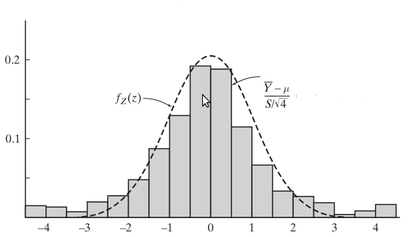

Örneklem Dağılımları (Sampling Distributions)
Bir (ve en önemli) örneklem dağılımını daha önce gördük, ki bu Normal dağılımdır. $\bar{X} = (X_1 + X_2 + ... + X_n) / n$ ortalaması ortalaması $\mu$ ve standard sapması $\sigma/n^2$ olan bir Normal dağılıma yaklaşır. Tabii bu dağılım standardize edilebilir, vs. Fakat rasgele değişkenler üzerinde pek çok işlem mümkündür, ve bu işlemlerin bazıları artık ünlü olan yeni / başka dağılımlar ortaya çıkartmışlardır. Bu dağılımlar önemlidir, çünkü mesela bazı uygulamalarda veri noktalarının karesini alırız, ve bu karesi alınmış normal noktaların bambaşka bir dağılımı vardır! Bu önemlidir çünkü veri noktalarının normalliği faraziyesinden hareketle kare alma işlemi gerektiren her ne hesap ise onun doğruluğunu bu sonuç dağılıma sorarak kontrol edebiliriz!
Devam edelim.
$\frac{\bar{Y}-\mu}{\sigma / \sqrt{n}}$ ve $\frac{\bar{Y}-\mu}{S /\sqrt{n}}$ Karşılaştırması
Diyelim ki normal olarak dağıldığını bildiğimiz bir nüfustan $Y_1,..,Y_n$ rasgele örneklemini topladık, ve amacımız bilinmeyen gerçek $\mu$ hakkında bazı sonuçlara varmak. Eğer varyans $\sigma^2$ biliniyorsa, bu noktadan sonra ne yapacağımız gayet açık: daha önce gördüğümüz gibi bir karar kuralı ortaya çıkartmak, ya da güven aralığı hesaplamak çok kolay, ki bu tekniklerin temelinde $Z = \frac{\bar{Y}-\mu}{\sigma / \sqrt{n}}$ dağılımının standart normal $f_Z(z)$'ye yaklaşması yatıyor.
Fakat pratikte $\sigma^2$ genellikle bilinmez, o zaman nüfus varyansının tahmin edicisi $S^2 = \frac{1}{n-1}\sum_{i=1}^n (Y_i-\bar{Y})^2$ kullanılır, ki bu maksimum olurluk tahmin edicisinin yansız (unbiased) versiyonu. Fakat buradaki önemli soru şu: $\sigma^2$ yerine $S^2$ koyma Z oranını nasıl etkiler? Daha önce büyük örneklemler için bir fark olmadığından bahsettik. Peki küçük örneklemler için?
Küçük $n$ için bu iki oranının birbirinden farklı olduğununun keşfi William Sealy Gossett adlı araştırmacıya ait. 1899'da Oxford'dan Kimya ve Matematik bölümünden mezun olduktan sonra Gossey, Guiness adlı şirkette çalışmaya başladı. Ürünlerin üzerinde yapacağı deneylerden aldığı veriler lojistik bazı sebepler dolaşışıyla çok azdı, ve "gerçek" $\sigma^2$'nin bilinmesi mümkün değildi. Çoğu zaman $n$ 4 ya da 5'den bile az oluyordu. Bu gibi durumlarla uğraşa uğraşa Gossey $\frac{\bar{Y}-\mu}{S / \sqrt{n}}$'nin beklendiği gibi çan eğrisi $f_Z(z)$ şeklinde değil, daha "etekleri kabarık" başka bir dağılım gibi gözüktüğünü farketti, yani sıfırdan çok küçük ya da ondan çok büyük oranların ihtimali çok düşük değildi.

Üstteki histogram $S$ kullanarak hesaplanmıştır, $n=4$ olmak üzere 500 deney üzerinden hesap yapılmıştır. İki dağılımın birbirinden uzaklaştığı görülüyor.
Genel olarak düşünmek gerekirse, olasılık dağılımları iki büyük kategori altına düşer. Aşağı yukarı bir düzine kadarı gerçek dünyadan alınabilecek her ölçümü olduğu haliyle iyi modelleme kabiliyetine sahiptir; mesela normal, binom, Poisson, üstel dağılımlar gibi. Diğer yandan daha az sayıda (ama bir o kadar önemli) dağılımlar $n$ tane rasgele değişkenin üzerinden hesaplanan fonksiyonların nasıl davrandığını çok iyi modeller. İşte bu dağılımlara örneklem dağılımları ismi verilir ve tipik kullanım alanları çıkarsama (inference) yapmaktır.
Normal dağılımı her iki kategoriye de aittir. Hem ayrı ayrı ölçümleri modellemek, hem de $\frac{\bar{Y}-\mu}{\sigma / \sqrt{n}}$'in olasılıksal davranışını modellemek için kullanılır. İkinci kullanımı normal dağılımın bir örneklem dağılımı olarak kullanılmasına örnektir.
Normal dağılımdan sonra en önemli üç örneklem dağılımı Öğrenci t Dağılımı, chi kare dağılımı ve F dağılımıdır. Son iki dağılım t oranını temsil eden $f_T(t)$'yi, yani $T = \frac{\bar{Y}-\mu}{S / \sqrt{n}}$'yi türetmek için gerekli.
Türetmek
Şaşırtıcı gelebilir ama t dağılımının yoğunluk fonksiyonunu türetmek pek kolay bir iş değildir, ilk başta kolay yapılabilirmiş gibi geliyor, çünkü Merkezi Limit Teorisinin temelini oluşturan $\frac{\bar{Y}-\mu}{\sigma / \sqrt{n}}$'in yoğunluğunu türetmek nisbeten basit, moment üreten fonksiyonlar ile yapılabiliyor. Fakat $\frac{\bar{Y}-\mu}{\sigma / \sqrt{n}}$ ifadesinden $\frac{\bar{Y}-\mu}{S / \sqrt{n}}$ ifadesine geçmek çok daha zor, çünkü bu durumda T iki tane rasgele değişkeninin bir oranı haline gelmiştir.
t Dağılımının ispatı için şu basamaklar gerekiyor; Önce standart normal rasgele değişkenlerin karelerinin toplamının gamma dağılımın özel bir hali olan chi kare dağılımı olduğunu göstermek. Daha sonra normal dağılmış olan bir nüfustan alınan $n$ örneklemden elde edilen $\bar{Y}$ ve $S^2$'nin birbirinden bağımsız rasgele değişkenler olduğunu göstermek, ve $\frac{n-1}{S^2}$'nin chi kare olarak dağıldığını ispatlamak. Daha sonra sıra birbirinden bağımsız iki chi kare yoğunluk fonksiyonunun arasındaki oranı türetmeye gelecek, ki bu bir F dağılımıdır. En son olarak $T^2 =(\frac{\bar{Y}-\mu}{S / \sqrt{n}})^2$ ifadesinin birbirinden bağımsız iki chi kare dağılımının oranı olduğunu göstermek ki $T^2$ ifadesi F dağılımının özel bir halidir.
Chi Kare, $\chi^2$ Dağılımı
Tanım
$Z_1, .. , Z_p$ bağımsız standart Normal rasgele değişkenler ise, $U = \sum_{ i=1}^{p} Z_p^2$ ki bu dagilima $p$ derecede serbestliğe (değrees of freedom) olan chi kare dağılımı (chi square distribution, yani $\chi^2$) ismi verilir.
Teori
$U$, $p$ derece serbestliğe sahip bir $\chi^2$ dağılıma sahip ise, ki yoğunluk
$$ f_U(u;p) = \frac{ 1}{\Gamma(\frac{p}{2}) 2^{p/2}} u^{(p/2) - 1} e^{-u/2} $$
$$ u \ge 0 $$
$$ \Gamma(a) = \int_{0}^{\infty} t ^{a-1} e^{-t} \mathrm{d} t $$
Üstteki yoğunluğun $r=m/2$ ve $\lambda=1/2$ olan bir Gamma dağılımı olduğu da söylenebilir. Fonksiyonunun parametresi sadece $p$'dir. İspat için [1, sf. 388].
$$ E[U] = p $$
$$ Var[U] = 2p $$
F Dağılımı
Diyelim ki $U$ ve $V$ birbirinden bağımsız, ve sırasıyla $m$ ve $n$ derece serbestliğe sahip iki chi kare dağılımı. O zaman $\frac{V/m}{U/n}$ olarak hesaplanan yeni bir rasgele değişkenin dağılımı, $m,n$ derece serbestliğe sahip bir F dağılımı olarak ifade edilir.
Teori
Rasgele değişken $\frac{Z^2}{U/n}$, ki $U$ bir chi kare dağılımıdır, 1,n derece serbestliğe sahip bir F dağılımına sahiptir.
İspatı burada vermiyoruz.
Teori $\qquad (1)$
$Y_1,..,Y_n$ ortalaması $\mu$, varyansı $\sigma^2$ olan bir normal dağılımdan alınan $n$ örneklem olsun. O zaman
a. $S^2$ ve $\bar{Y}$ birbirinden bağımsızdır
b. $\frac{(n-1)S^2}{\sigma^2}=\frac{1}{\sigma^2}\sum_{i=1}^{n}(Y_i-\bar{Y})^2)$ hesabı $n-1$ derece serbestliğe sahip bir chi kare dağılımıdır.
İspat için [1, sf. 388].
Nihayet $\frac{\bar{Y}-\mu}{S / \sqrt{n}}$ ifadesinin yoğunluğunu bulmak için tüm altyapıya sahibiz.
Tanım
$Z$ bir standart normal rasgele değişken, $U$ ise $n$ derece serbestlikteki bir chi kare rasgele değişken olsun. O zaman $n$ derece serbestliği olan Öğrenci t oranı (Student's t ratio)
$$ T_n = \frac{Z}{\sqrt{ \frac{U}{n}}} \qquad (2) $$
olarak belirtilir.
Teori
$Y_1,..,Y_n$, bir $\mu,\sigma$ normal bir dağılımdan alınmış bir rasgele örneklem olsun. O zaman
$$ T_{n-1} = \frac{\bar{Y}-\mu}{S/\sqrt{n}}$$
$n-1$ serbestlik derecesine sahip bir t Dağılımıdır.
İspat
$\frac{\bar{Y}-\mu}{S/\sqrt{n}}$ ifadesini şu şekilde yazabiliriz,
$$ \frac{\bar{Y}-\mu}{S/\sqrt{n}} = \frac{\frac{\bar{Y}-\mu}{\sigma/\sqrt{n}} } {\sqrt{\frac{(n-1)S^2}{\sigma^2(n-1)}}} $$
Değil mi? Alttaki karekök içindeki bölendeki $n-1$'ler birbirini iptal eder, karekök kare ifadelerini iptal eder, ve geriye kalan $S/\sigma$, ters çevirilip $\sigma/S$ olarak $\frac{\bar{Y}-\mu}{\sigma/\sqrt{n}}$'yi çarpacaktır, onun bölümdeki $\sigma$'sini iptal edecektir, ve nihai bölüme $S$ yerleştirilmiş olur, ve eşitliğin solundaki ifadeye erişiriz. Fakat bu dönüştürücü bölüm ifadesi sayesinde eşitliğin sağ tarafında yeni bir formüle eriştik; karekök ifadesi içine bakarsak üstteki (b) teorisiyle uyumlu olarak $\frac{(n-1)S^2}{\sigma^2}$ görüyoruz, ki bu ifade bir chi kare dağılımı.
Diğer yandan eşitliğin sağındaki bölüm kısmı bir standart normal. Yani (2)'de tarif edilen duruma erişmiş oluyoruz, üstteki ifade bu tanıma göre bir t Dağılımı.
t Dağılımı (Student's t)
$X$, $n$ derece bağımsızlıkta $t$ dağılımına sahiptir, ve dağılımı
$$ f_T(t) = \frac { \Gamma(\frac{n+1}{2}) } { \sqrt{n\pi}\Gamma(\frac{n}{2}) \bigg(1+\frac{t^2}{n}\bigg)^{(n+1)/2} } $$
Aslında Normal dağılımı $t$ dağılımının $v = \infty$ olduğu hale tekabül eder. Cauchy dağılımı da $t$'nin özel bir halidir, $n = 1$ halidir. Bu durumda yoğunluk fonksiyonu
$$ f(x) = \frac{ 1}{\pi(1+ x^2)} $$
Bu formül hakikaten bir yoğunluk mudur? Kontrol için entegralini alalım,
$$ \int_{ -\infty}^{\infty} f(x) \mathrm{d} x = \frac{ 1}{\pi} \int_{ -\infty}^{\infty} \frac{\mathrm{d} x}{1 + x^2} $$
Çoğunlukla entegre edilen yerde "1 artı ya da eksi bir şeyin karesi" türünde bir ifade görülürse, yerine geçirme (subsitution) işlemi trigonometrik olarak yapılır.
$$ x = \tan \theta, \theta = \arctan x $$
$$ 1 + x^2 = 1 + \tan^2\theta = \sec^2\theta$$
$$ dx / d\theta = \sec^2\theta $$
O zaman
$$ = \frac{ 1}{\pi} \int_{ -\infty}^{\infty} \frac{\mathrm{d} x}{1 + x^2} = \frac{ 1}{\pi} \int_{ -\infty}^{\infty} \frac{ 1}{\sec^2\theta}\sec^2\theta \mathrm{d}\theta = \frac{ 1}{\pi} \int_{ -\infty}^{\infty} 1 \mathrm{d}\theta = $$
$$ = \frac{ 1}{\pi} \theta |_{ -\infty}^{\infty} = \frac{ 1}{\pi} [\arctan(\infty) - \arctan(-\infty)] $$
$$ = \frac{ 1}{\pi} [\frac{ \pi}{2} - (-\frac{ \pi}{2}) ] = 1 $$
Kaynaklar
[1] Larsen, Introduction to Mathematical Statistics and Its Applications
[2] Runger, Applied Statistics and Probability for Engineers